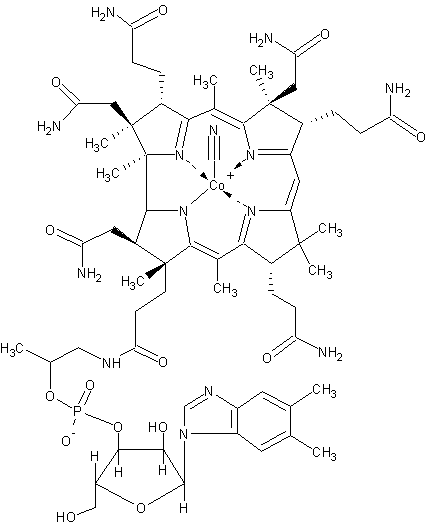
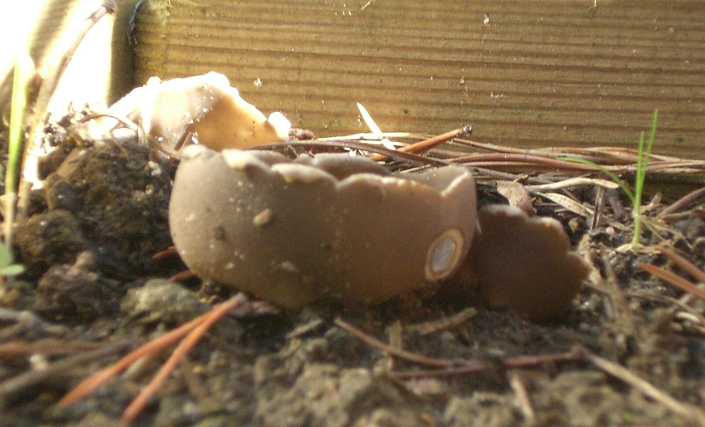
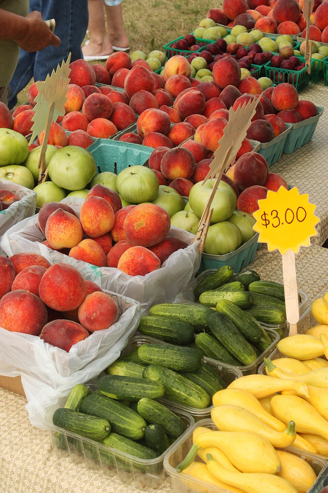
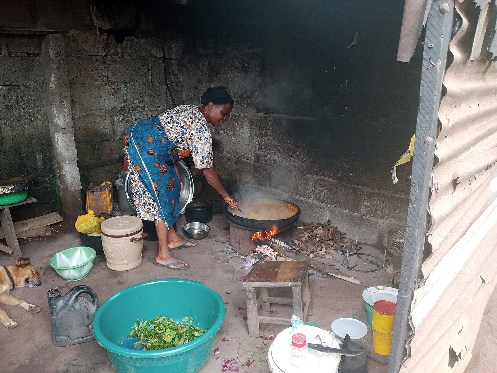

Vitamina B12: Suplementação é Essencial
Todo vegano deve suplementar B12. Ela não é produzida por plantas nem animais — é de origem bacteriana. A deficiência pode causar danos neurológicos irreversíveis. Opte por suplementos cianocobalamina ou metilcobalamina.
Cogumelos Não São Fonte Segura de B12
Alguns cogumelos têm análogos de B12 que não são biologicamente ativos. Portanto, não confie neles como única fonte. Use apenas como complemento alimentar, não como substituto da suplementação.
Veganismo e Preço: Comer Bem Sem Gastar Muito
Baseie sua alimentação em grãos, leguminosas e vegetais da estação. Arroz, feijão, lentilha, batata, abóbora e verduras são acessíveis e nutritivos. Produtos industrializados veganos são opcionais.
Cozinha Caseira: Economize e Tenha Controle
Cozinhar em casa é mais barato e saudável. Você evita conservantes e ajusta os temperos ao seu gosto. Comece com receitas simples e vá explorando temperos, texturas e ingredientes locais.
Leia Rótulos com Atenção

Alimentos comuns como pães, biscoitos e massas podem conter leite, ovos ou mel. Sempre leia os ingredientes e procure selos veganos quando possível.